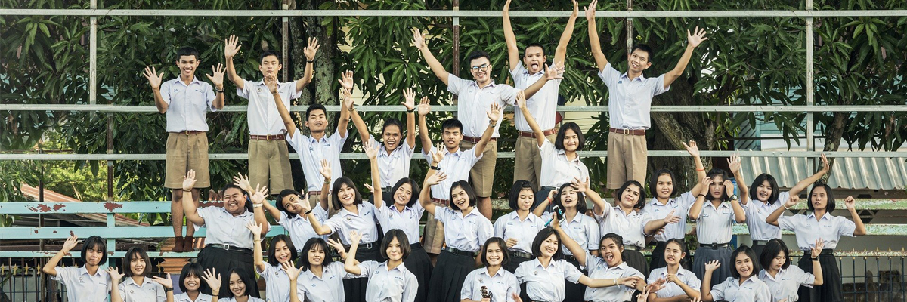

홈아이콘
> 사회공헌 > 희망봉사단
희망봉사단
“함께 나누는 희망,함께 만드는 행복 ”
희망봉사단 소개
하나투어는 사회 그늘진 곳곳에 온정을 전하는 봉사활동에도 다양한 노력을 기울이고 있습니다. 지난 2009년 전 임직원이 참여하는 ‘하나투어 임직원 희망봉사단’을 정식 창단해 전사적인 차원에서 임직원 봉사활동을 보다 체계적으로 운영하고 있습니다. 전국 36개 지사 및 총괄팀을 6대 권역(수도권, 강원권, 충청권, 영남권, 호남권, 제주권)으로 분류하여 지역별 활동을 자율적으로 전개하고 있으며 신입사원 연수 프로그램 안에 봉사활동이 필수 이수 과정으로 포함되어 있습니다. 소외 아동/청소년을 위한 활동의 경우 국제구호단체 굿네이버스와 희망나눔협약을 통해 굿네이버스의 산하기관 및 협력기관들과 정기 결연을 맺고 연간 문화체험 계획을 수립하여 봉사활동을 진행하고 있습니다. 정기 봉사 이외에도 소그룹, 착한버스, 재능나눔 등의 기획봉사와 임직원들의 자발적인 참여를 기반으로 한 사내 나눔 캠페인을 통해 해외 빈곤아동 지원사업 기금 마련에 동참하고 있습니다.
활동분야
정기봉사
-
- 아동/청소년
-
- 환경
-
- 지역사회
기획봉사
-
- 재능나눔
-
- 소그룹
-
- 착한버스